I grew up in Liechtenstein, a small country which doesn’t have an army. After the German Confederation was dissolved in 1868, Liechtenstein declared permanent neutrality and dissolved its army. Even during World War One and World War Two, Liechtenstein remained unharmed due to Swiss protection and general lack of global importance. War seems very far away either geographically or historically and is generally not spoken about.
The only time I would ever see soldiers in real life was when I would ride the train in Switzerland: young drunk Swiss recruits either celebrating their weekend off, or tired and annoyed on Sundays on their way back to the caserns.
What I did not know at the time was that so-called “neutral” Switzerland actually manufactures and exports weapons all over the world. To me, it is difficult to understand why so many civilised and peaceful countries are still among the main contributors to the weapons industry, despite the extensive evidence of the apaling pain and destruction associated with war, so much of which has been laboriously documented by artists for centuries. Yet this behaviour persists and many so-called developed countries continue to export tools of destruction.
We live in a world where every country has a minister of defence but no ministry of peace. The term “defence” in this job title stands for defending rather than attacking, invading or engaging in war, therefore the aim is to protect and try to defend against any foreign aggressor. Nevertheless, some countries are openly acting as aggressors in foreign nations, often under the pretext of helping a neighbour or protecting major interests. So, perhaps a more fitting term would be the “minister of attack” or “minister of war” instead. This happens in nearly every nation in the world which is a member state of the UN, thus all countries engaged in a non-defending war which have signed the UN Charta are clearly violating:Chapter 1 - Article 2 - paragraph 4 2.Yet this isn’t brought into question, nor has there been any severe backlash against this consistent breach of contract.
Language has always been the first instrument of war: long before the gun has been cocked, verbal attacks and disguised intentions are used to convince the public and to blame the other.
The aggressions and invasions following political preparation have led to many wars between countries. “We carefully identify a multitude of wars — the Hundred Years War, the Thirty Years War, the American Civil War, the Vietnam War, and so on but we don’t have a plural form for peace”3. So how does the human – the sole individual–react to the war experience?
If you start to consider the impact of artists and activists on the perception of war, you begin to become conscious of the image of the unseen industry which fuels it. It is worth looking back to the works of past artists who went to war and into the battlefield to experience and to live through this martyrium. To see how the experience of war has formed the language that artists use to portray the war. In order to understand why the industry wants to stay
hidden and why it chooses to create a different narrative, it is necessary to study the past and investigate how war was communicated to the public by artists.
Otto Dixwas a German painter and printmaker born in Untermhaus in 1891 who is most commonly known for having painted his harrowing experience of the first world war. On the question of why he would volunteer to fight, Dix said:
‘I had to experience how someone beside me suddenly falls over and is dead and the bullet has hit him squarely. I had to experience that quite directly. I wanted it. I’m therefore not a pacifist at all – or am I? Perhaps I was an inquisitive person. I had to see all that myself. I’m such a realist, you know, that I have to see everything with my own eyes in order to confirm that it’s like that. I have to experience all the ghastly, bottomless depths of life for myself’.4
Several of Dix’ paintings were banned and categorized as Degenerate Art (Entartete Kunst) by the Nazis. They were seen as paintings that would weaken the country’s readiness for war and endanger the moral strength of the people. They were deemed useless and said to have no addition to any moral or artistic gain.
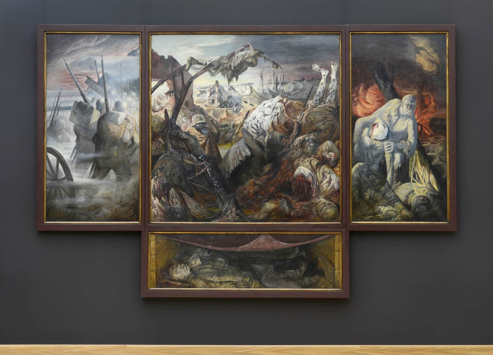
The War, by Otto Dix, 4m x 2m, 1929-325
One of his most famous works is his painting Der Krieg (“The War”) in which he declares war against war. He painted this triptych around 1930. The left panel displays soldiers marching into battle. It is foggy and their bags, helmets and weapons are still in good condition. The viewer is not able to see their faces–they remain anonymous to us like many of the fallen soldiers from this notorious war have. In the largest, central panel, death and destruction take center stage. There is no remaining prestige, patriotism or glorification of war here. Dead humans and animals are strewn across a cold, muddy and chaotic battlefield. In the background, buildings are in ruins and only one living soldier remains, huddling for warmth and breathing through a gas mask. A dead body on the upper section of the panel points towards the fallen on the ground. Legs point towards the sky, one hand grasps out towards the emptiness, and every face is completely disfigured. The right side of the panel shows a soldier dragging a wounded soldier out of hell, with dramatic red storm-like clouds hanging in the sky. The living soldiers’ eyes are staring at the viewer, his pupils are large and wide open. In the lower central panel, the last piece of the painting, we see fallen soldiers laying in a dugout–or dead in a tomb.
As previously mentioned, Otto Dix volunteered to be deployed to the war in order to experience and live through its horrors. The painting “The War” portrays the unfathomable experiences and tragedies that he witnessed from the muddy trenches of this terrible war. This same darkness and horror also haunts his prints and drawings.
Contemporary artists have taken the same unusual decision to expose themselves to the battlefield in order to undergo the experience: Steve Mumford for instance is an american artist who voluntarily went six times to Iraq and twice to Afghanistan during wartime. He didn’t enlist as a soldier like Otto Dix, but instead entered these warzones as an artist in order to document and paint the lives of the soldiers and people living in the occupied country. His paintings are rather documentative compared to Otto Dix's violence and fear-filled depictions of the war. I asked Steve Mumford in my interview with him why this might be;
”Dix, I believe, was in the trenches of WWI, the most violent kind of warfare perhaps ever practiced. While I saw occasional combat it was never the sort of prolonged festering-corpse, rat-infested, blood-soaked earth experience. Most shooting doesn’t hit anyone, so a firefight can be terrifying but often bloodless. Alternately, when someone does get hit, they’re often not near you. I made a few images of combat, but mostly my work has shown the spaces in between the bullets.”
The aforementioned painting by Otto Dix displays all of the horror and destruction of manmade conflict. He wasn’t and isn’t the only painter who painted anti-war paintings to portray this world. This is why I also wanted to know how an artist who recently visited a war zone views his position in this kind of situation. The question was if he would see his paintings as documentations, or as anti-war paintings?
“I don’t consider my work to be explicitly anti-war. On the other hand, one could use particular drawings, especially those from the Baghdad ER or the US military hospitals as anti-war messaging or propaganda. But there are other drawings that could probably be used for recruitment posters, in a “soft” kind of way.”6
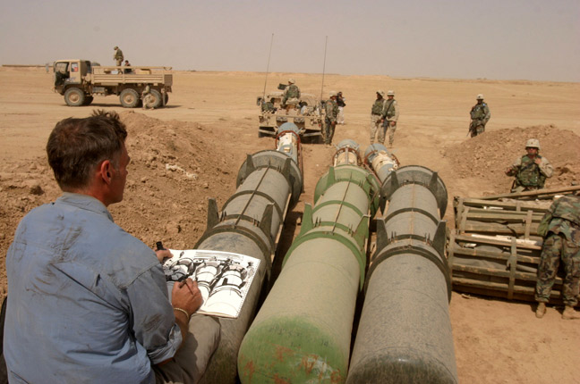
Steve Mumford drawing in Tikrit, Iraq 7
Besides documenting and living in the war zone, the role of an artist can help people to share and process their memories of war. A news photographer may document the war and every different form of media will portray it differently; a camerateam with reporters will document and interview people, but at the same time the story will be told differently based on the cut, the directors’ choice, the media’s political position or questions... An artist is therefore performing in a much more neutral and free space, making their own decisions, consciously or unconsciously, while they draw. There is no media house influencing the direction of the piece or managing what deadlines they must deliver under. Steve Mumford explained;
“I might spend an hour making a drawing, in which time people come and go. While drawing, I put a narrative spin on the artwork, consciously or unconsciously. I try not to have the drawing reflect the divided politics of a controversial issue, because this feels uninteresting to me; rather, I’m interested in how the people in front of me are feeling and how their emotions and body language influence the scene. I pretty easily empathize with true and heartfelt emotion. It might be coming from a soldier, or from an Iraqi civilian, or an Iraqi soldier… or an insurgent. I want to capture that.”8
The paintings and sketches serve to document history and they may seem neutral. However, each painting still demonstrates an active case of invasion of another country and is therefore documenting a war crime. As pretty or as nice as the drawings may be, an american artist documenting an american war surrounded by american troops is certainly not the way to depict a neutral and objective vision of war. The sketch on the left shows war suspects being treated responsibly with bags covering their heads and made to kneel the ground. But sometimes war crimes like that of Abu Ghraib happen and may happen again in future wars to come. The photos of Abu Ghraib are, like the following painting, a documentation and a representation of the war. However, these documentati an illegal war and the numerous war crimes which ensued. Unfortunately one of the most memorable moments of this war which were forgotten much too soon. The US Army and the CIA commited numerous human rights violations against prisoners including sexual abuse, rape, torture and murder in this prison. Crimes like these tend to remain undocumented and undisclosed, it is only through the occasional leak by activist groups and whistleblowers that the public learns of war crimes like those which took place inside the walls of Abu Ghraib.
Would it have been possible to paint something like the photograph from Abu Ghraib and later have it exhibited in New York? Most certainly not.
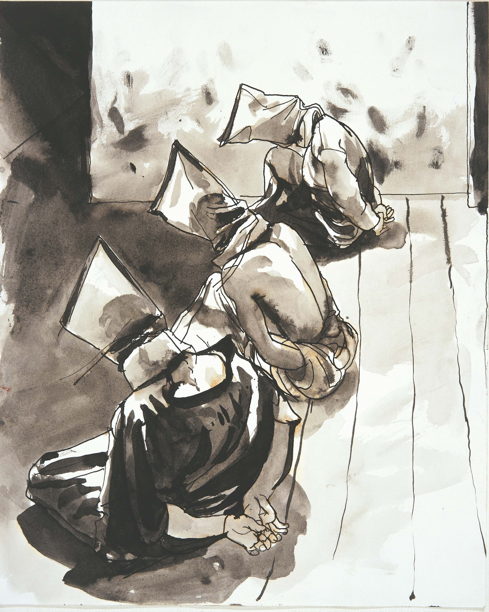
Steve Mumford, Suspects in Samarra. Sandbags over prisoners' heads9
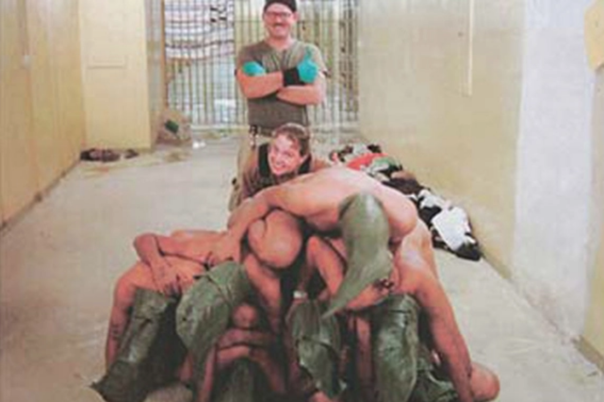
Suspects in Abu Ghraib, Sandbags over prisoners’ heads. Would it have been possible to paint something like this?10
Totentanz
Artists like Otto Dix who took a stand against war, an entire movement was created as a response towards war in 1916; the Dada movement which had a huge impact on art in general and can still be seen actively in today's activism against the hidden defence industry.
The Dada movement was born at the Cabaret Voltaire in Zurich. Dada had many faces but was fundamentally a movement against war. In performances, paintings, collages and speeches they expressed to society how mad and chaotic the world had become. Craziness, abstraction and mere stupidity would better serve to reflect what was going wrong with the world. The war in Europe was complete madness and destruction. Dada was contributing to the culture by also challenging it. Famous artists like Hugo Ball, Hans Arp, Tristan Tzara, Hannah Höch and the french-american artist Marcel Duchamp are only a few artists in connection with this movement. The movement would go on to spread from Zurich to many major cities like Paris, Berlin and New York, growing into a global movement against the war.
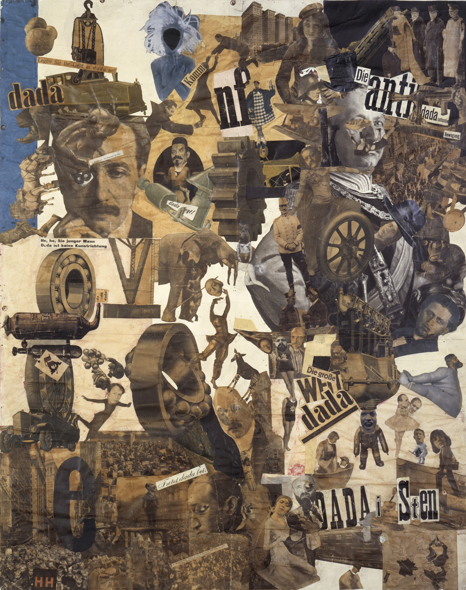
Cut with the Dada Kitchen Knife through the Last Weimar Beer-Belly Cultural Epoch in Germany, 1919, Collage, 114 x 90 cm11
Hugo Ball performed in a very graphically and linguistically violent piece denouncing the brutality and offensive nature of war at the Cabaret Voltaire in 1916. The poem piece was performed with the melody of “So leben wir”. An old german military folk song from the Prussian army which is originally from the “Dessauer Marsch”. The song was also very well known as a drinking song.
Hugo Ball – Totentanz
That's how we die, that's how we die. We die every day Because it is so easy to die. In the morning still in sleep and dream Already there at noon. In the evening already in the bottom of the grave.
The battle is our house of joy. Our sun is of blood. Death is our sign and our password. We leave woman and child - What do they concern us? If you look at us only Can leave.
This is how we murder, this is how we murder. We kill every day Our comrades in the dance of death. Brother, stand up in front of me Brother, your breast, Brother you must fall and die.
We don't grumble, we don't growl We are silent every day Until the hip bone rotates from the joint. Our bed is hard Dry our bread. Bloody and besmirched the good Lord.
We thank you, will thank you Herr Kaiser, for the grace That you chose us to die. Just sleep, sleep softly and still, Until you are raised. Our poor body that the lawn covers.
The poem Totentanz (en. Death dance) by Hugo Ball.12
Today we can see that Dadas’ philosophy and performativity is a rich source of inspiration for artists who choose to denounce war. The british artist Jill Gibbon has been visiting arms and defence trades from London, Paris and Dubai for over a decade. The arms and defence trade shows are generally a closed society which is inaccessible to the broader public. Therefore she needed to embody a new role and disguise herself to visit such fairs of which she explains;
“Inside, visitors share codes of dress and behaviour. Almost invisible hiding behind fences, security and guarded by the police. For an artist not wearing a suit, formal shoes, and fake pearls. I stroll up and down the aisles gazing at equipment, and leaf through catalogues. The pretence is rewarded with gifts; as I walk around the stalls I am offered small sandwiches, a glass of champagne, a rubber tank. The gifts affirm my membership of the event. Lewis Hyde suggests, ‘gifts tend to be an economy of small groups, of extended families, small villages, close-knit communities, brotherhoods and, of course, of tribes’13 . In return, I find myself nodding and smiling.”14
The gifts she received were published in her essay:This is not a bomb – matériel culture and the arms trade. The images below show what she collected.
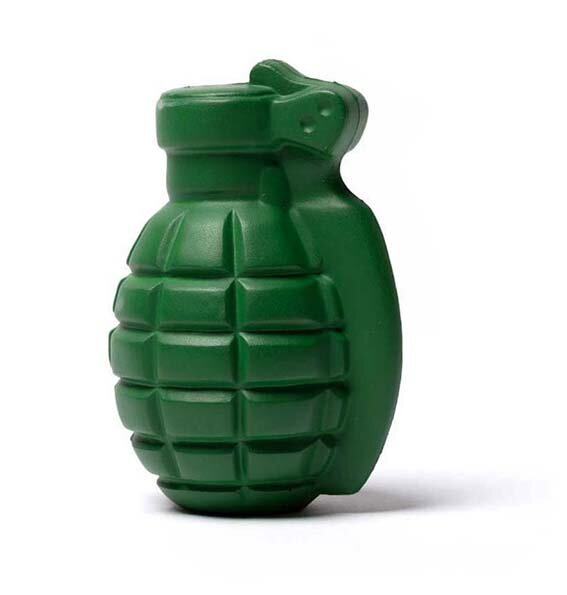
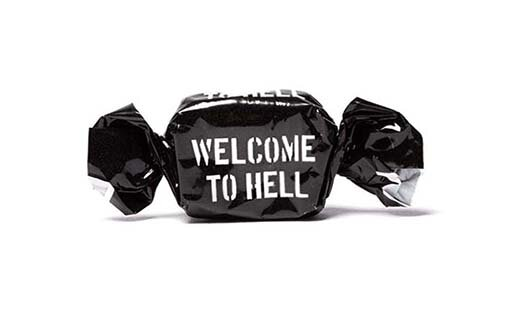
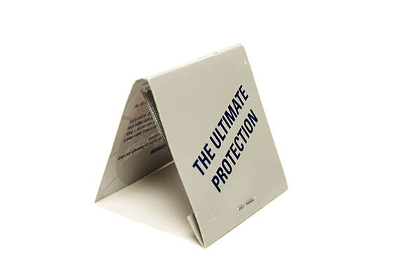
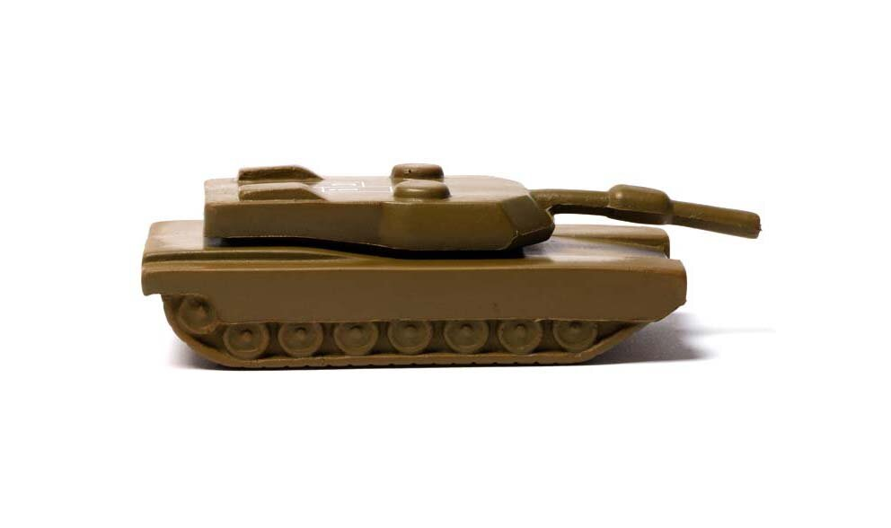
Stress Ball in shape of handgranate, Toffy in “WELCOME TO HELL” stencil font, Stress ball in the shape of a tank, “THE ULTIMATE PROTECTION” a condom.15
Jill Gibbon writes about the gifts she received at the fair;
“Saussure argued that signs have shifting meanings. In an arms fair, bombs also have shifting meanings. They are presented as seductive objects, a focus for personal and state power, international cooperation, defence, and jobs. In short, weapons are treated in the arms industry as commodities. The stress ball is made from soft foam plastic, a material with shape-shifting properties resembling the changing meanings of weapons in the arms industry”.16
Another observation made by the artist is the way such products are presented. Arms and defence fairs deal in tools of destruction. Therefore, these fairs are not open to the public and are very well secured. The visual language tends to be targeted towards the male gender since traditionally, most of the world's decision makers–generals, politicians or private company managers–are male. At an arms and defence trade show, one can see such sights as an imposing transformer-like sculpture standing outside the entrance, or perhaps a Lara Croft-esque illustration complete with mane-in-the-wind horses–or maybe yet Viking inspired visuals like those used by the Norwegian company NFM Group which develops different materials and garments for soldiers to wear in battle. Jill Gibbon tells more about her experience and what she saw at the presentation at the DSEI;
“At DSEI weapons are presented as ‘supersensual’ things. Tank shells are displayed on plinths for viewing. Hand grenades are cut open and dramatically lit to show the precision of design and engineering. CS gas canisters are promoted as ‘moral effect grenades.’ A young woman in a short skirt leans against a tank, while businessmen take selfies alongside her. A Brimstone missile is suspended against an image of the London skyline under changing coloured lights. The promotional literature calls it, ‘the most accurate precision strike missile on the market. When you have to hit a target, stay within budget and don’t have time to waste, Brimstone is your answer’ (MBDA, 2017).”
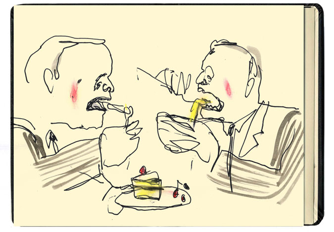
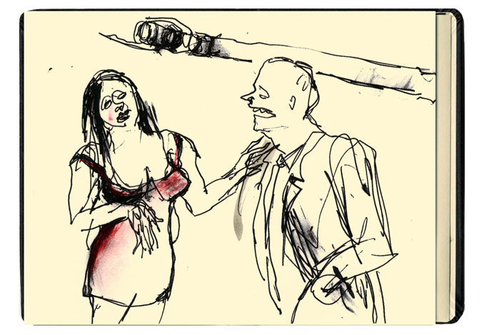
style="color:grey;">Drawings by Jill Gibbon while visiting the defence fairs.18 19
A photographer who documented their own experience at a defence fair is the german photographer Julian Röder who visited the IDEX (International Defence Exhibition) in the UAE. Through the Agentur Ostkreuz I was able to access a video–which is currently offline–(again)–in which Julian Röder explains:
“Here I found the absolute equivalent of a world where everything you see is only the world of goods/merchandise. Everything only serves the goods and people and individuals have become invisible behind an illusory world of propaganda and clichés.”20
He experienced similar to Jill Gibbon that the goods and merchandise become ‘supersensual’ things.
This illustrates how signs can have shifting meaning; a defence fair can seem like any other fair despite the disagreeable transactions which take place within its walls. At the end of the quarter the numbers need to be right.
With the following images, I aim to compare reality and fantasy as well as how they present themselves in the context of the Defence Fair. How do weapons producers present their work at defence trade fairs and how does it differ from their actual undertakings? It becomes evident that a crucial part is being deliberately hidden from customers.